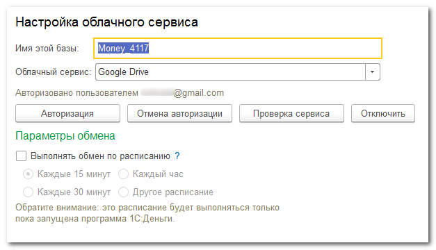

Настольную программу 1С:Деньги можно использовать совместно с удобным мобильным приложением Миниденьги. Это приложение доступно для скачивания в Google Play и App Store. Одна информационная база 1С:Деньги синхронизируется с любым количеством мобильных устройств, благодаря чему легко организовать совместный учет денег для всех членов семьи.
Синхронизация приложений может осуществляться несколькими способами. Например, когда мобильные устройства и компьютер с настольной программой находятся в одной локальной сети, синхронизировать программы можно через домашнюю сеть. Устройство, находящееся далеко от компьютера, можно синхронизировать через один из облачных сервисов хранения файлов. Но даже если интернет и локальная сеть оказались недоступны, выполнить синхронизацию все равно можно с помощью ручного копирования файлов.
Сравнение способов синхронизации приложений
|
Домашняя сеть |
Облачный сервис |
Обмен файлами |
|
Требуется установить дополнительное ПО (веб-сервер) и настроить домашнюю сеть |
Требуется действующий аккаунт в одном из облачных сервисов: Яндекс.Диск, Dropbox, Google Drive |
Требуется каким-либо способом передавать файл с устройства на компьютер и обратно |
|
Мобильное устройство и компьютер должны находиться в одной локальной сети |
Обязателен доступ к Интернет как с мобильного устройства, так и с компьютера |
Ни локальная сеть, ни Интернет не нужны |
|
Настольную программу запускать не обязательно. Достаточно включить сам компьютер с веб-сервером |
На компьютере должна быть запущена настольная программа | |
|
Синхронизация выполняется нажатием одной кнопки на мобильном устройстве. Данные синхронизируются за один шаг. |
Полная синхронизация выполняется за три шага: - выгрузка данных с мобильных устройств - обработка данных в настольной программе - загрузка ответа на мобильных устройствах |
Полная синхронизация выполняется за три шага: - выгрузка данных с мобильного устройства - обработка данных в настольной программе - загрузка ответа на мобильном устройстве |
|
Файлы с данными какое-то время хранятся на сторонних облачных сервисах |
Файлы с данными не хранятся ни на каких внешних ресурсах |
Начинать настройку синхронизации всегда следует с настольной программы.
В меню настольной программы выберите Сервис – Синхронизация с мобильными устройствами.

В форме синхронизации включите и настройте нужные способы синхронизации.

Настройка синхронизации в домашней сети требует от пользователя достаточной подготовки и времени. Но синхронизация этим способом самая быстрая и удобная, а для хранения данных не используется никаких сторонних ресурсов. Смотрите подробное описание: Настройки домашней сети

В общем случае, в программе достаточно включить (т.е. разрешить) использование домашней сети для обмена данными, а вся настройка выполняется вне программы, или в режиме конфигуратора. Для сипользования домашней сети на компьютере должен быть установлен веб-сервер, на нем должна быть опубликована информационная база 1С:Деньги и http-адрес этой опубликованной базы должен быть доступен как в настольной программе, так и на мобильном устройстве. Проверить доступность http-адреса в настольной программе можно в форме настроек домашней сети.
Настройка обмена через облачный сервис очень простая и не требует ничего, кроме аккаунта в облачном сервисе. Смотрите подробное описание тут: Настройка облачного сервиса.
Вся настройка сводится к заданию имени настольной базы и к авторизации приложения в облачном сервисе. С помощью авторизации пользователь разрешает доступ приложения к своим файлам в облачном сервисе. А имя базы используется приложением для создания вспомогательных файлов в облачном сервисе.

Синхронизация через файл никаких настроек не требует.
Настройку синхронизации на мобильном устройстве следует выолнять только по завершении настройки настольной программы.
Запустите Миниденьги на устройстве, откройте список Настройки и сервис и нажмите на строку Настройка синхронизации

Включите синхронизацию, если она еще не включена.
Задайте Название устройства.
Пусть это название поможет вам быстро отличить одно устройство от другого в списке синхронизации. Например, таким названием может быть «Мой GT», «iPhone Инги», «Планшет Игоря» и т.п. Название можно поменять в любой момент, но только на самом мобильном устройстве.
Укажите срок хранения операций на мобильном устройстве.
Обычно, нет нужды хранить на мобильном устройстве историю операций за несколько месяцев и лет. Для оперативного контроля достаточно иметь список последних операций, а все остальное выгружать и хранить на компьютере. Если задать срок хранения операций, то после каждой синхронизации все более ранние операции будут с устройства автоматически удаляться. Так же будут сформированы операции «Ввод/изменение остатка» с актуальными остатками на начало заданного периода.
Срок хранения можно изменить в любой момент, но список операций будет изменен только после выполнения полной синхронизации с настольной программой. Т.е. после того, как от настольной программы поступит ответ на новый запрос мобильного приложения. Это особенно ощутимо при синхронизации через облачный сервис: с мобильного приложения выгружается запрос с измененным сроком хранения и одновременно получается ответ на предыдущий запрос, который был подготовлен еще по прежнему сроку. И только после того, как настольная программа обработает новый запрос, мобильное приложение сможет загрузить операции по новому сроку хранения.
Если для синхронизации настроена домашняя сеть, включите ее использование в настройках.
Укажите http-адрес настольной программы.
Если в настольной программе есть пользователи, укажите пользователя настольной програмы и пароль пользователя. Во избежание проблем лучше использовать пользователя, в чьем логине и пароле нет знаков препинания и служебных символов, типа скобок, слешей и т.д. Для синхронизации можно создать отдельного пользователя и обмен в домашней сети выполнять именно через него. А фактического пользователя устройства можно указать в форме синхронизации.
Имя и пароль пользователя указывайте с соблюдением регистра, т.к. в некоторых случаях это может оказаться критичным.
Нажмите на кнопку Проверить, чтобы убедиться в доступности опубликованной базы. Иногда защитные программы на компьютере или настройки роутера запрещают доступ к компьютеру с других устройств локальной сети. Тогда проверка адреса в настольной программе будет пройдена успешно, а проверка такого же адреса на мобильном устройстве будет выдавать ошибку. Для устранения этой проблемы следует обратиться к документации на программу защиты и к инструкциям по настройке домашнего роутера.
Если проверка http-адреса прошла успешно, настройку домашней сети можно считать завершенной.
Для настройки облачного сервиса нужно включить переключатель Использовать облако
Укажите то же имя базы на компьютере из настроек настольной программы. Имя нужно указывать с соблюдением регистра символов, т.к. для некоторых облачных сервисов имена «File» и «file» совершенно разные.
Выберите тот же облачный сервис, который выбран в настольной программе.
Нажмите кнопку Авторизовать. На странице сервиса войдите под тем же логином, что использовали при авторизации настольного приложения. Разрешите мобильному приложению доступ к файлам на облачном сервисе.
Если авторизация завершилась успешно, ниже будет отображен логин пользователя.
На этом настройка облачного сервиса завершена.
В конце желательно задать каталог мобильного устройства, который будет использоваться если возникнет необходимость выполнить ручной обмен файлами.
Дополнительно можно установить автоматическое выполнение синхронизации при старте или при завершении приложения.
Если для синхронизации включены и домашняя сеть, и облачный сервис, можно выбрать способ синхронизации, который будет использоваться по умолчанию.
Если настройку синхронизации нужно начинать с настольной программы, то само обмен данными всегда начинается с мобильного устройства.
Убедитесь, что включен компьютер с опубликованной базой 1С:Деньги. Саму настольную программу при этом запускать не обязательно.
Убедитесь, что мобильное устройство соединено с домашней сетью по wi-fi.
Откройте Мниниденьги на мобильном устройстве и нажмите кнопку Синхронизировать. Если включено несколько способов синхронизации, выберите в главном меню команду Синхронизировать в домашней сети. Приложение выполнит синхронизацию и сообщит о результатах.
Смотрите так же подробное описание метода.
Убедитесь, что мобильное устройство подключено к Интернет.
Обратите внимание: при обмене могут передаваться значительные объемы данных и в случае мобильного интернета это может привести к дополнительным платежам.
Полная синхронизация выполняется за три шага:
1. из мобильных приложений в облако выгружаются изменения. Если используется несколько мобильных устройств, желательно выгрузить изменения на всех устройствах
2. запускается настольная программа, которая по расписанию или с помощью команды пользователя загружает из облака файлы, обрбатывает их и выгружает ответные файлы
3. мобильные приложения загружают ответные файлы из облака
Смотрите так же подробное описание синхронизации через облачные сервисы
Этот способ похож на обмен через облачный сервис, но с той разницей, что файлы с данными нужно копировать с устройства на компьютер и обратно вручную. Ни Интернет, ни локальная сеть при этом не обязательны.
Как и в случае облачного сервиса, синхронизация начинается с мобильного приложения: оно создает файл mdmessage.xml, который следует любым способом скопировать на компьютер и загрузить в настольную программу. Настольная программа автоматически создаст в том же каталоге ответный файл mdmessage.repl.xml, который следует скопировать на мобильное устройство и загрузить в мобильном приложении.
Смотрите подробное описание способа.
Для управления синхронизацией предназначена форма Синхронизация с мобильными устройствами в настольной программе. Эта форма позволяет:
Смотрите так же подробное описание формы синхронизации.